Nền màn chơi · raster

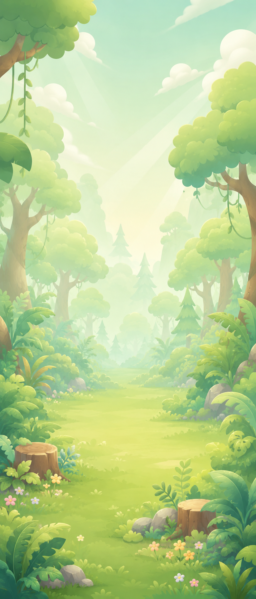
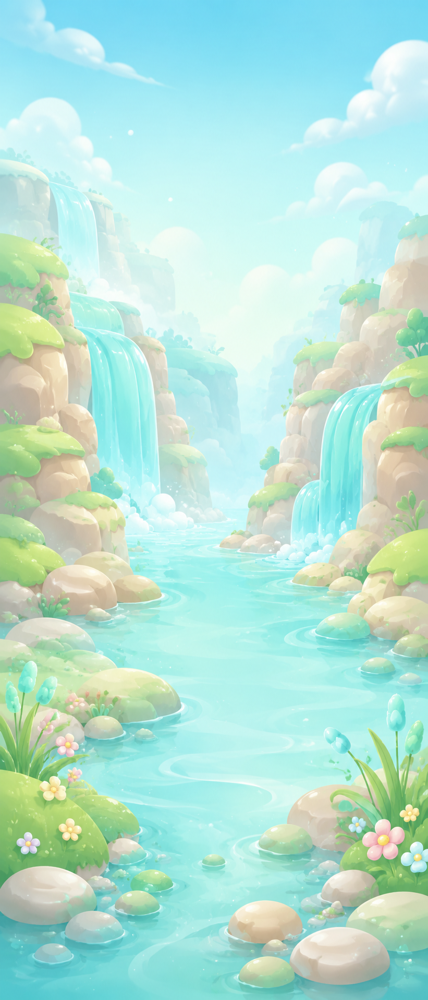
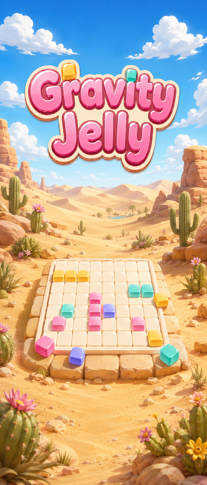

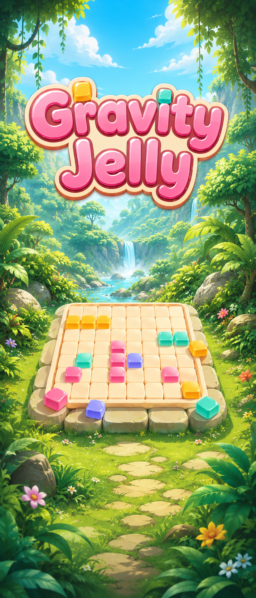
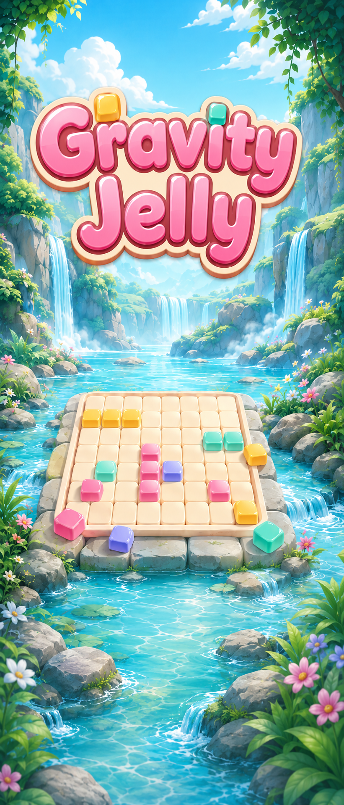
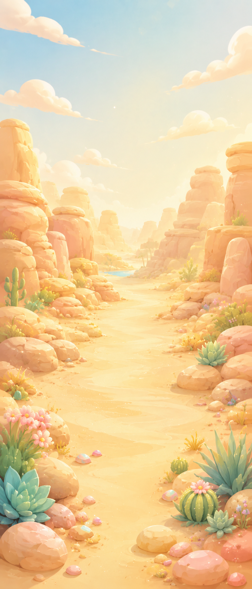
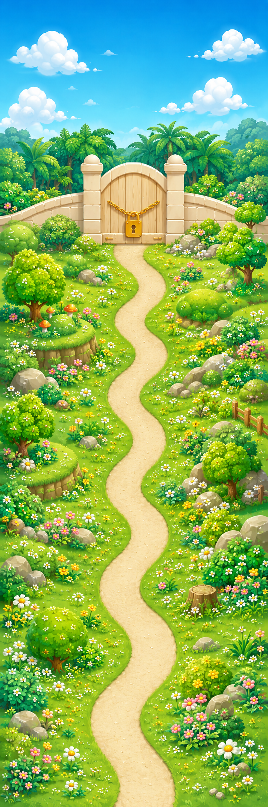
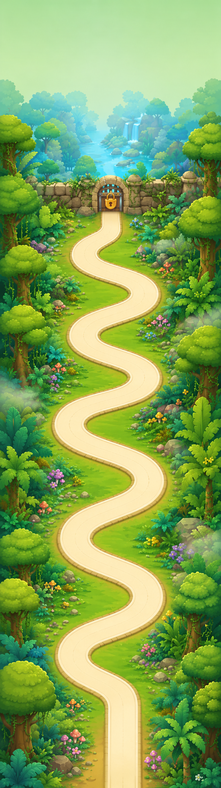
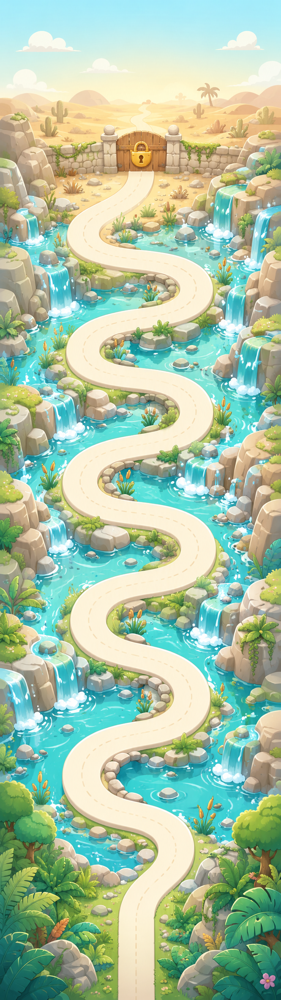
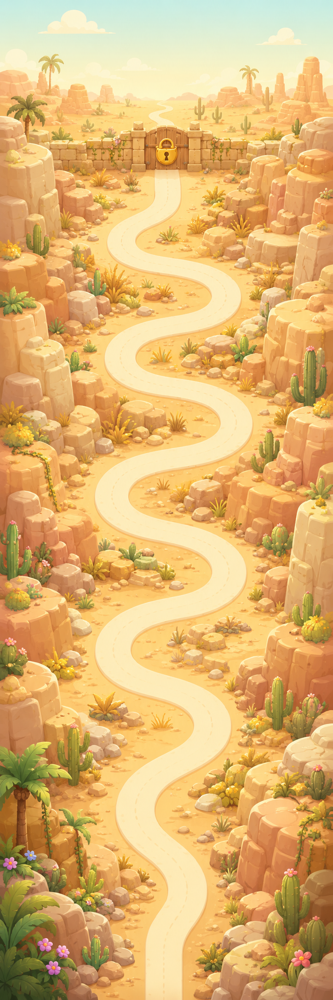
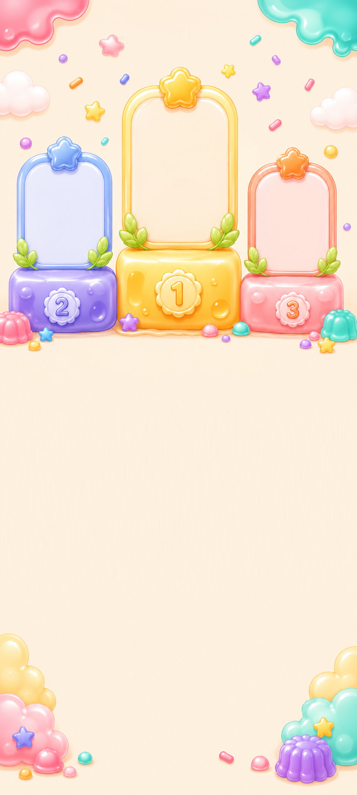
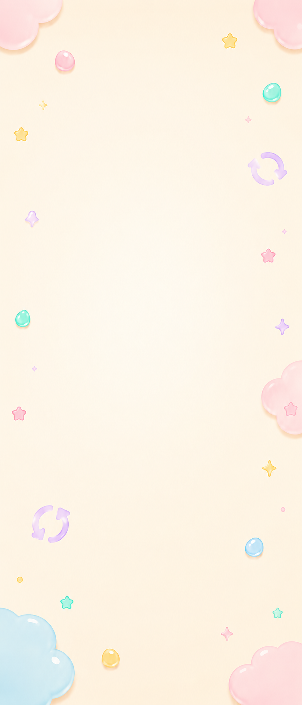












PNG full-bleed cho nền màn chơi. Đặt phủ kín khung máy với object-fit: cover và object-position: center bottom để giữ tiền cảnh (hoa, nấm) ở đáy. HUD, board và khay xếp chồng lên trên.